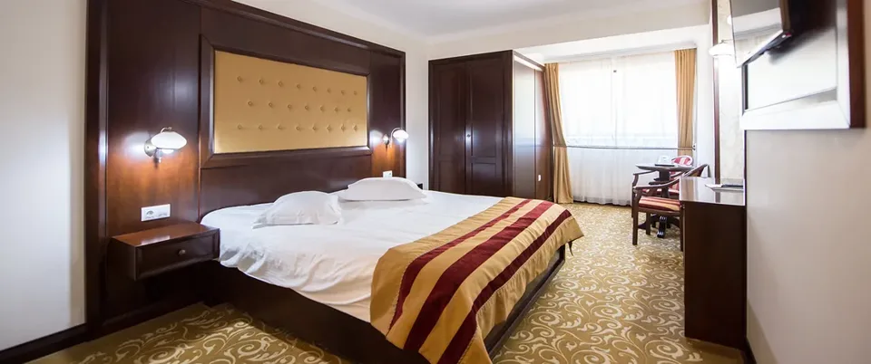

Hotel Silva
Terasa cu optzeci de locuri de la Silva are ca reper masivul Caraiman. Un oaspete care a revenit în mai multe sezoane spune că a cerut de fiecare dată o cameră orientată spre Crucea de pe Caraiman. Când invitați familia la Bușteni, specificați la rezervare dacă această priveliște contează și pentru camere. Pentru ceremonie, cereți în schimb configurația exactă a terasei, fiindcă optzeci de locuri la mesele obișnuite nu arată singure câte rânduri de scaune încap cu un culoar central.
4,1 2261 recenzii GoogleVreau organizare completă →
Despre Hotel Silva
În prezentarea Hotel Silva apare Salonul Bucegi. Printre configurațiile publicate pentru Hotel Silva se găsesc terasă (până la 80 persoane). Pentru cazarea la Hotel Silva, în oferta operatorului apar 6 apartamente.
Terasa hotelului are 80 de locuri și vedere către masivul Caraiman.
La Hotel Silva, dublele superioare ocupă ultimul nivel prezentat pentru această categorie, etajul al șaselea. În oferta standard sunt 84 de camere duble, descrise cu balcon. Pentru cine vrea să se pregătească lângă rude, merită întrebat cum sunt repartizate camerele rezervate și pe unde trece fotograful între ele. Dacă un membru al familiei are dificultăți la urcat, cereți informația privind liftul și distanța efectivă de la recepție până la camera sa.
Hotelul publică numere diferite pentru recepție, evenimente și rezervările restaurantului. La restaurant se poate cere masa de degustare. Pentru disponibilitatea spațiului la o petrecere și un eventual moment afară e mai potrivit contactul pentru evenimente, iar pentru camerele din ajun, recepția. În confirmarea finală, identificați serviciile rezervate prin fiecare dintre aceste contacte și ora la care încep.
Pentru Bușteni, fișa de clasificare a hotelului Silva înregistrează 117 spații de cazare, cu 234 de locuri. Acest total cuprinde întregul hotel. Terasa de la poalele Caraimanului are altă capacitate, așa că puteți cere separat lista camerelor ținute pentru familie și numărul meselor montate efectiv în exterior.
Pentru întâlnirea informală dinaintea petrecerii mai există barul hotelului, cu biliard și tenis de masă.
Date practice
| Inventar de cazare | 6 apartamente Sursă |
|---|---|
| Salon prezentat de operator | Salonul Bucegi Sursă |
| Capacitate publicată · Terasă | până la 80 persoane Sursă |
| Dotări în profilul Google | Parcare gratuită · Wi-Fi gratuit Sursă |
| Distribuția evaluărilor Google la documentare | 5 ★ (1224) · 4 ★ (483) · 3 ★ (281) · 2 ★ (127) · 1 ★ (146) Sursă |
| Cazare înregistrată la proprietate | Silva — 234 de locuri de dormit în 117 spații, 3 stele Sursă |
| Cazare în apropiere | Mariana, Bușteni · 16 locuri de dormit · 0,4 km în linie dreaptă Sursă |
| Cazare în apropiere | Villa Ermitage, Bușteni · 25 de locuri de dormit · 0,5 km în linie dreaptă Sursă |
Încap toți dragii voștri?
Capacitate și spații
- Cununie în aer liber
- De confirmat
- Cină cu ring de dans
- De confirmat
- Spațiu pentru ploaie
- De confirmat
Pregătește vizionarea
Cere disponibilitate și ofertă
Echipa Locație Nuntă cere oferta pentru Hotel Silva cu acordul tău.
În versiunea de evaluare, trimiterea cererilor este dezactivată.